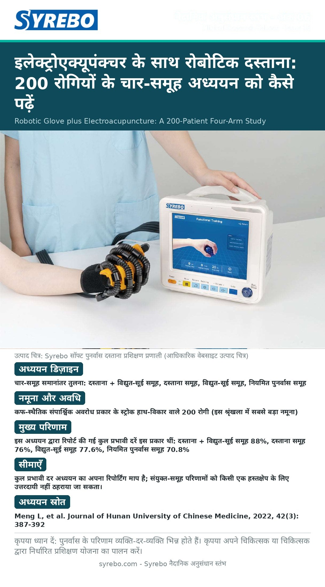

इलेक्ट्रोएक्यूपंक्चर के साथ रोबोटिक दस्ताना: 200 रोगियों के चार-समूह अध्ययन को कैसे पढ़ें

स्रोत: Meng L, Yang S, Zhong Q, et al. Clinical study of rehabilitation robot gloves combined with electroacupuncture to treat patients with phlegm-stasis blocking collaterals stroke hand dysfunction. Journal of Hunan University of Chinese Medicine, 2022, 42(3): 387-392. स्रोत पृष्ठ
सीमाएँ: कुल प्रभावी दर अध्ययन का अपना रिपोर्टिंग माप है; संयुक्त-समूह परिणामों को किसी एक हस्तक्षेप के लिए उत्तरदायी नहीं ठहराया जा सकता।
युक्ति: पुनर्वास के परिणाम व्यक्ति-दर-व्यक्ति भिन्न होते हैं। कृपया अपने चिकित्सक या चिकित्सक के मार्गदर्शन में विशिष्ट प्रशिक्षण योजना बनाएँ।